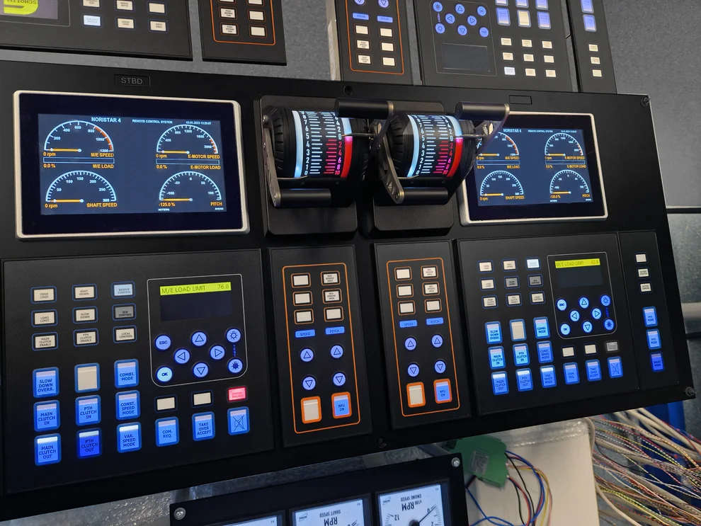

Sensor putaran NORIS FAH13 dan FAJ13
Mengukur putaran mesin atau poros. Untuk mencari pengganti, kirim kode lengkap, foto sensor, jenis pemasangan, dan sinyal keluarannya jika diketahui.
Noris Group GmbH
PT Araya Internusa adalah distributor resmi tunggal NORIS di Indonesia. Tanyakan sensor, instrumen, noriMos, noriStar, dan noriNet. Kami melayani pengadaan dan dukungan teknis dari kantor Surabaya dan Jakarta untuk proyek di seluruh Indonesia.

Mengukur putaran mesin atau poros. Untuk mencari pengganti, kirim kode lengkap, foto sensor, jenis pemasangan, dan sinyal keluarannya jika diketahui.

Untuk pengukuran suhu pada mesin dan sistem kapal. Pemilihan sensor bergantung pada media, rentang suhu, panjang probe, dan sambungan.

Mengirimkan hasil pengukuran tekanan ke indikator atau sistem kontrol. Periksa rentang, jenis tekanan, sambungan proses, dan sinyal keluaran.

Indikator analog untuk panel mesin atau anjungan. Untuk penggantian, sertakan foto skala, ukuran panel, dan sinyal masukan.

Modul seperti VF5 dan VP5/VPT5 mengolah sinyal frekuensi atau suhu untuk instrumen dan sistem otomasi.

Memantau peralatan kapal dan menampilkan alarm serta status pada stasiun operator. Untuk retrofit, sertakan daftar sinyal dan gambar panel jika tersedia.
Mengendalikan propulsi dari anjungan dan stasiun kontrol lain. Konfigurasi disesuaikan dengan mesin, jenis propulsi, dan antarmuka kapal.


Menampilkan data kapal yang terhubung untuk pemantauan armada dan analisis kinerja. Ketersediaan data bergantung pada sistem di kapal dan koneksi ke darat.
Sertakan nomor komponen, foto pelat nama (nameplate), jumlah yang dibutuhkan, serta lokasi kapal atau proyek. Jelaskan kebutuhan pengadaan, penggantian, atau retrofit agar tim kami dapat memeriksa kecocokan perangkat.
HUBUNGI KAMI
Kirim model peralatan, foto pelat nama, serta kendala atau perubahan yang Anda perlukan.
17 tahun pengalaman dalam rekayasa kapal, industri, dan otomasi di seluruh Indonesia.
Kantor SurabayaGateway Citra Harmoni RKG 32–33
Taman, Sidoarjo
Jawa Timur 61257, Indonesia
Sampaikan detail sistem Anda kepada tim kami.